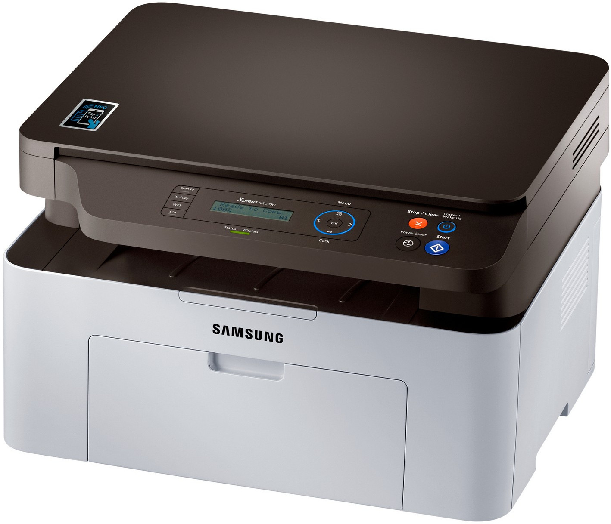

A lézernyomtatók olyan eszközök, amelyek a lézer technológiát használják a digitális dokumentumok nyomtatására. Itt van néhány kulcsfontosságú dolog a lézernyomtatókról: 1. Működési elv: A lézernyomtatók a lézer technológiát használják a nyomtatási folyamat során. Az első lépés az, hogy a nyomtatni kívánt dokumentumot digitálisan elkészítik a számítógépen. A lézernyomtató ezt a digitális információt olvassa, majd egy lézerfény segítségével egy fotoreceptorra vetíti. A fotoreceptorra jutó fényenergia által az elektrosztatikus töltések megváltoznak, majd egy toner (porfesték) kerül felvitele a fotoreceptorra, amely csak az elektrosztatikusan feltöltött részekre tapad. A toner így lézer segítségével kerül a papírra, majd egy hőhenger segítségével a toner rögzítésre kerül a papíron. 2. Gyorsaság és hatékonyság: A lézernyomtatók általában gyorsabbak, mint más típusú nyomtatók, mint például a tintasugaras nyomtatók. Ezért ideálisak nagy mennyiségű nyomtatási feladatokhoz vagy azokhoz a helyzetekhez, ahol a sebesség fontos szempont. 3. Felbontás: A lézernyomtatók általában kiváló minőségű nyomtatást tesznek lehetővé, különösen a szöveges dokumentumok esetében. A legtöbb lézernyomtató képes magas felbontású képek nyomtatására is. 4. Színes és fekete-fehér nyomtatás: A lézernyomtatók elérhetőek színes és fekete-fehér változatban is. A színes lézernyomtatók különösen hasznosak, ha színes dokumentumokat vagy grafikákat kell nyomtatni. 5. Költségek: Bár a lézernyomtatók általában drágábbak a vásárlási költségek tekintetében, hosszú távon gyakran költséghatékonyabbak lehetnek, mivel az alacsonyabb oldalköltségekkel és a nagyobb hatékonysággal járnak. 6. Alkalmazások: A lézernyomtatók széles körben használhatók otthoni és irodai környezetben, valamint kereskedelmi környezetben is. Gyakran használják szöveges dokumentumok, prezentációk, szórólapok, és más üzleti anyagok nyomtatására.
